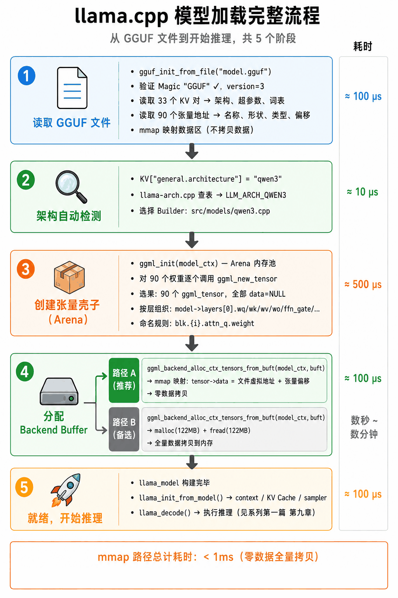

这是 llama.cpp 源码系列的第二篇。上一篇我们拆解了推理引擎 GGML，理解了张量、Arena、延迟执行、Galloc、KV Cache、线程模型的完整骨架。
但还有一个问题没回答：模型文件本身是怎么设计的？ 从磁盘上的一个文件，到内存里一组可用的 ggml_tensor，中间经历了什么？
这就是本文要讲的内容。读完你会理解 GGUF 的二进制格式、mmap 为什么能做到”瞬间”加载、以及一个 HuggingFace 模型怎么转成 GGUF 用 llama.cpp 跑起来。
引言：先说清楚这篇文章讲什么——以及为什么需要它
第一章：模型文件格式的本质——把”一堆数字”和”它们是什么”存进磁盘
抛开所有框架、所有工具，一个模型文件最底层到底存了什么？两样东西：数据和元数据。
- 数据就是权重——训练结束后冻结下来的那几十亿个浮点数。
- 元数据告诉你这些数字怎么用——它们按什么形状排列、属于哪一层、叫什么名字、模型总共多少层、用什么 tokenizer。
就这么简单。所有的格式之争，本质上都是在争”数据和元数据怎么组织、怎么打包、怎么读取“这三个问题的不同答案。
1.1 格式一：PyTorch pickle（.pt / .pth / .bin）——最古老，也最危险
PyTorch 从 2016 年诞生起就用 Python 的 pickle 做序列化。Pickle 的设计初衷是”把任意 Python 对象存到磁盘，以后原样读回来”——包括类定义、函数、甚至 lambda。
怎么存的：torch.save(model.state_dict(), "model.pt") → Python 的 pickle 模块把整个 state_dict（一个 OrderedDict，key 是层名，value 是 tensor）序列化成二进制。
问题在哪：pickle 的反序列化过程会执行 pickle 数据中的任意 Python 代码。这意味着一个恶意构造的 .pt 文件可以在你加载时删掉你的文件、窃取你的数据、安装后门。HuggingFace 早期大量使用这种格式，后来因为安全问题逐步迁移到 safetensors。
为什么推理不能用它：
- 需要 Python + PyTorch 运行时（几百 MB）
- 不支持 mmap（必须一次性读到内存）
- 不支持量化（权重以 FP32/FP16 存储）
- 不是自描述的（需要额外代码定义模型类才能加载）
1.2 格式二：Safetensors——安全替代 pickle
HuggingFace 在 2022 年推出了 safetensors。它的核心卖点是：纯数据，不能执行代码。
怎么存的：文件头 8 字节是 JSON 元数据的长度（uint64），后面紧跟一段 JSON 描述每个 tensor 的名字、形状、数据类型、在文件中的偏移量，再后面就是原生的 tensor 二进制数据。
Safetensors 文件布局:
┌──────────────────────────────────────────────┐
│ Header (8 bytes): JSON 部分的长度 │
├──────────────────────────────────────────────┤
│ JSON Metadata: │
│ "token_embd.weight": {shape:[768,6400], │
│ dtype:"F16", offsets:[0, 9830400]} │
│ "blk.0.attn_q.weight": {...} │
│ ... │
├──────────────────────────────────────────────┤
│ Tensor Data (raw bytes): │
│ [9.8MB of token_embd] [1.1MB of attn_q] ...│
└──────────────────────────────────────────────┘为什么它安全：JSON 不是图灵完备的——解析 JSON 不能执行代码。Tensor 数据是纯二进制，直接 memcpy 到目标地址。
为什么推理不能直接用：它只解决了”安全存储”，没有解决”高效推理”。Safetensors 的元数据（JSON）在文件最前面，但这只是 tensor 级别的元数据——没有模型架构信息（多少层、什么 attention）、没有 tokenizer、没有推理超参数。而且它不支持量化格式内嵌——权重总是以 FP32/FP16/BF16 存储。
1.3 格式三：ONNX——跨框架的”通用语言”
ONNX（Open Neural Network Exchange）是微软和 Facebook 在 2017 年发起的。它的目标是：用 PyTorch 训练，用 TensorRT 推理，中间用 ONNX 做桥梁。
ONNX 用 Protobuf 定义了一个完整的计算图——不仅有权重，还有操作节点（Conv、MatMul、ReLU…）。这比 safetensors 更进一步：safetensors 只知道”有这么些 tensor”，ONNX 知道”这些 tensor 怎么用”。
为什么 LLM 推理不用它：ONNX 是为视觉模型（固定输入大小、静态图）设计的。LLM 需要动态形状（batch 可变、序列长度可变）、KV Cache、autoregressive 循环——这些都是 ONNX 的弱项。加上 onnxruntime 的依赖链仍然很重。
1.4 格式四：AWQ / GPTQ——GPU 服务端的量化格式
这两个是专门为 GPU 服务端推理设计的量化格式，不是独立的文件格式——它们通常以 PyTorch checkpoint 或 safetensors 为载体，内部包含量化后的权重和量化参数。
- AWQ（Activation-aware Weight Quantization）：按激活值的大小分配量化精度，重要通道保留更高精度
- GPTQ（GPT Post-Training Quantization）：用 Hessian 矩阵逐层优化量化方案，质量接近原始
它们的问题：必须配合特定的推理引擎（vLLM、TGI、TensorRT-LLM），不能在 llama.cpp 中直接使用。因为它们的量化方案（per-channel scaling、分组量化）和推理逻辑是耦合的。
1.5 格式五：GGUF——专为本地推理而生
GGUF 的诞生动机很纯粹：前面四种格式没有一个适合”在用户的破笔记本上跑大模型”：
- PyTorch pickle 不安全 + 需要 Python
- Safetensors 安全但没有模型级元数据 + 需要 Python 库
- ONNX 不适合动态 LLM
- AWQ/GPTQ 绑定了 GPU 服务端推理引擎
GGUF 的设计目标一句话：打开文件，一切就绪。 不需要 config.json，不需要 tokenizer.json，不需要 Python，不需要 GPU。一个文件，纯 C 读取，mmap 瞬间加载，量化格式内嵌，跨平台。
第二章：GGUF 的二进制格式——五段结构
2.1 规范就在源码注释里
打开 ggml/include/gguf.h，前 31 行就是完整的文件格式规范。不用翻文档，不用查 wiki——源码注释就是规范本身。这很 GGML——把复杂的事情说得尽可能简单。
1. File magic "GGUF" (4 bytes) ← 文件头，固定 0x47475546
2. File version (uint32_t) ← 当前是 3
3. Number of ggml tensors in file (int64_t) ← 有多少个权重张量
4. Number of key-value-pairs in file (int64_t) ← 有多少个元数据键值对
5. For each KV pair: ← 遍历所有 KV 对
1. The key (string)
2. The value type (gguf_type)
3a. If array: type + count + binary of elements
3b. Otherwise: binary of value
6. For each ggml tensor: ← 遍历所有张量
1. The tensor name (string)
2. The number of dimensions (uint32)
3. For each dimension: size (int64)
4. The tensor data type (int32)
5. The tensor data offset in tensor data blob (uint64)
7. The tensor data binary blob (optional, aligned) ← 实际权重数据画成图就是五段：
┌──────────────────────────────────────────────┐
│ 1. Magic "GGUF" (4 bytes) │
├──────────────────────────────────────────────┤
│ 2. Header │
│ version = 3 (uint32) │
│ n_tensors = 90 (int64) │
│ n_kv = 33 (int64) │
├──────────────────────────────────────────────┤
│ 3. KV Metadata (33 pairs, variable length) │
│ "general.architecture" → "qwen3" │
│ "qwen3.block_count" → 8 │
│ "qwen3.embedding_length"→ 768 │
│ "tokenizer.ggml.tokens" → ["<|endoftext|>",│
│ "<|im_start|>", │
│ ...] │
│ ... (30 more) │
├──────────────────────────────────────────────┤
│ 4. Tensor Info Array (90 entries) │
│ [0] "token_embd.weight" │
│ dims=[768, 6400], type=F16, offset=0 │
│ [1] "blk.0.attn_norm.weight" │
│ dims=[768], type=F32, offset=9.8M │
│ [2] "blk.0.attn_q.weight" │
│ dims=[768, 768], type=F16, offset=... │
│ ... (87 more) │
│ [89] "output_norm.weight" │
│ dims=[768], type=F32, offset=127.8M │
├──────────────────────────────────────────────┤
│ 5. Tensor Data (aligned to 32 bytes) │
│ 实际的权重值，按 Tensor Info 的 offset 定位 │
│ 总大小 = sum of all tensor sizes │
└──────────────────────────────────────────────┘2.2 存储类型系统
GGUF 的 KV 元数据支持 12 种基本类型（ggml/include/gguf.h:53-68）：
enum gguf_type {
GGUF_TYPE_UINT8 = 0, // 无符号 8 位整数
GGUF_TYPE_INT8 = 1,
GGUF_TYPE_UINT16 = 2,
GGUF_TYPE_INT16 = 3,
GGUF_TYPE_UINT32 = 4,
GGUF_TYPE_INT32 = 5, // 枚举用这个
GGUF_TYPE_FLOAT32 = 6, // 浮点数
GGUF_TYPE_BOOL = 7, // 布尔值（存储为 int8）
GGUF_TYPE_STRING = 8, // 字符串（长度 uint64 + 内容）
GGUF_TYPE_ARRAY = 9, // 数组（类型 + 数量 + 元素列表）
GGUF_TYPE_UINT64 = 10,
GGUF_TYPE_INT64 = 11, // 大整数
GGUF_TYPE_FLOAT64 = 12,
};字符串的存储方式是 string_length (uint64) 后跟 C 字符串（无 null 终止符）。这样读取时知道要读多少字节，不用扫描 null。
第三章：一个完整的加载流程——从命令行到你第一个 token
把上面所有内容串起来。当你在终端输入：
llama-cli -m minimind-f16.gguf -p "你好"发生的完整流程：
llama_model_load_from_file("minimind-f16.gguf")
│
├─► gguf_init_from_file("minimind-f16.gguf")
│ → 读 Header: version=3, n_tensors=90, n_kv=33
│ → 读 33 个 KV 对 → gguf_context.kv
│ → 读 90 个 Tensor Info → gguf_context.info
│ → mmap 数据区 → gguf_context.data = 0x7f...
│
├─► llama_model_loader 构造
│ → 读 "general.architecture" = "qwen3"
│ → 读 超参数: n_layer=8, n_embd=768, n_head=8, ...
│ → 读 tokenizer: 6400 个 token, BPE merges
│
├─► 确定架构 → LLM_ARCH_QWEN3 → llm_build_qwen3
│
├─► 在 model_ctx（Arena, no_alloc=true）创建 90 个 ggml_tensor
│ token_embd, output_norm, output
│ blk.0.attn_q, blk.0.attn_k, blk.0.attn_v, blk.0.attn_output
│ blk.0.attn_q_norm, blk.0.attn_k_norm
│ blk.0.ffn_gate, blk.0.ffn_down, blk.0.ffn_up
│ ... (8层)
│ 全部 data=NULL
│
├─► ggml_backend_alloc_ctx_tensors_from_buft(model_ctx, cpu_buft)
│ → 计算总大小 = 122 MB
│ → mmap 映射: 每个 tensor->data 直接指向 GGUF 文件内对应偏移
│ → 或 malloc: 分配 122MB, memcpy 从文件读取
│
└─► 返回 llama_model *
model->layers[0].wq->data → 0x7f... (GGUF 文件内偏移)
model->layers[0].wq->ne = [768, 768]
model->hparams.n_layer = 8
model->vocab.n_tokens = 6400
llama_init_from_model(model, params)
→ 创建 llama_context, KV Cache, sampler, ...
llama_decode(ctx, batch)
→ 第一篇讲的完整推理流程每个阶段都干净利索，没有多余步骤。这就是 GGUF + mmap + GGML 三者组合的威力——从磁盘文件到跑出第一个 token，中间没有一次完整的数据拷贝。
下图是整个加载流程的五阶段全景图（含各阶段实测耗时）：
